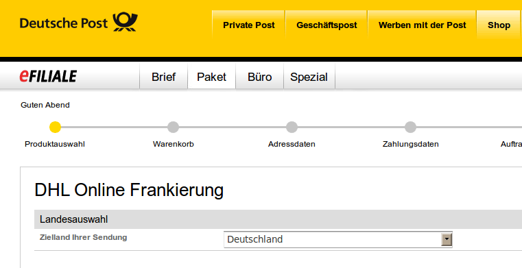

Öffnet die Webseite des Paketdienstes in einem Browserfenster und füllt die Formularfelder mit den Adressdaten.
Die Seite mit den zu füllenden Formularfelder muss nicht unbedingt die Startseite sein. Werden auf einer Webseite des Paketdienstes die erforderlichen Felder gefunden, werden Absender und Empfängerdaten verwendet, um die Formularfelder zu füllen. Dieser Vorgang wird einmalig durchgeführt. Für neue Adressdaten ist das Editorfenster neu zu öffnen.
Siehe auch Paketdienst